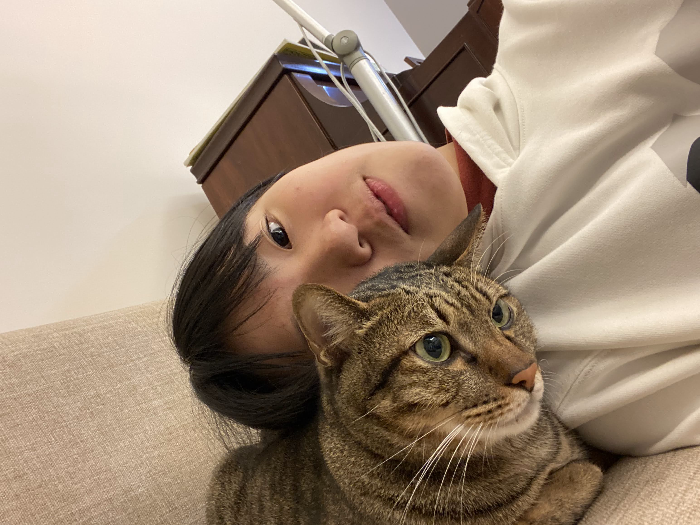

我
我是誰？
我在哪?
我喜歡什麼?
我想要的是什麼?
我是廖子甯，今年16歲，台中人。目前與爸爸、媽媽、弟弟一起住，家裡還有一隻虎班貓~
我是個能收能放的人，可以在開心時非常嗨。我的個性比較外冷內熱，剛認識我時可能會覺得我有距離感、表情有點緊繃，但我其實是喜歡和別人聊天與相處的人，相處過後時常聽別人形容我是熱情有活力的。

我是廖子甯，今年16歲，台中人。目前與爸爸、媽媽、弟弟一起住，家裡還有一隻虎班貓~
我是個能收能放的人，可以在開心時非常嗨。我的個性比較外冷內熱，剛認識我時可能會覺得我有距離感、表情有點緊繃，但我其實是喜歡和別人聊天與相處的人，相處過後時常聽別人形容我是熱情有活力的。